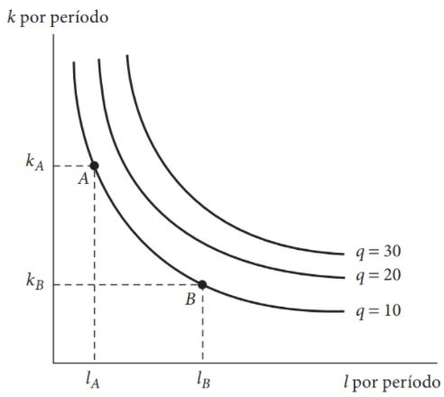

Tecnologia de Produção
Introdução
Introdução
Na primeira parte do nosso curso de Microeconomia I, estudamos o comportamento dos consumidores.
Desse comportamento, obtivemos uma função de demanda por um bem que é, quase sempre, decrescente no seu preço.
Nosso objetivo agora é estudar o processo de produção e oferta de bens econômicos e o comportamento das firmas.
Desse comportamento, vamos obter a oferta de um bem econômico, que será crescente no seu preço.
O comportamento desses dois agentes econômicos (consumidores e firmas) pode levar a uma situação de equilíbrio no mercado do bem considerado, onde a quantidade demandada iguala a quantidade produzida, por meio de preços flexíveis.
Introdução
As instituições que coordenam o processo de transformação de insumos em produtos finais são chamadas firmas.
Estas instituições podem ser grandes - e.g., Google, Apple, Microsoft, etc. Ou instituições pequenas - e.g., trabalhadores autônomos, produtores locais.
Embora essas instituições possam ter diferentes objetivos, todas as firmas devem tomar certas decisões básicas em seus processos produtivos.
Nosso objetivo geral, agora, é desenvolver um conjunto de ferramentas que possibilitem a análise destes processos decisórios.
Introdução
Inicialmente estudaremos algumas maneiras de modelar a relação física entre insumos e produtos. Para isso, introduziremos o conceito de função de produção, uma abstração útil das complexidades dos processos produtivos do mundo real.
Dois aspectos mensuráveis da função de produção serão considerados: os retornos de escala (i.e., como o produto é expandido quando todos os insumos aumentam), e a elasticidade de substituição (i.e., o quão fácil um insumo pode ser substituído por outro enquanto mantemos o mesmo nível de produto).
Introdução
Posteriormente, utilizaremos o conceito de função de produção para discutir os custos de produção.
Assumiremos que todas as firmas tem por objetivo produzir seus produtos ao menor custo possível, uma hipótese que nos permitirá obter as funções custo para uma firma.
Discutiremos também, ainda que brevemente, como os custos podem diferir no curto e no longo prazo.
Introdução
Por fim, concluiremos esta seção com o estudo das decisões de oferta por parte de uma firma.
Para tal, assumiremos que o gerente de uma firma fará decisões de insumos e produtos de maneira a maximizar os lucros.
Com isso desenvolveremos o modelo fundamental do comportamento de oferta das firmas maximizadoras de lucro, um conceito que será muito utilizado em microeconomia e em outras áreas do curso.
Funções de produção
Introdução
Tecnologias de produção: Introdução
A principal atividade de qualquer firma é transformar insumos em produtos.
Como economistas, estamos interessados nas escolhas que as firmas tomam para atingir este objetivo, abstraindo das muitas complexidades envolvidas nas engenharias destes processos.
Para isso, construímos um modelo abstrato do processo produtivo.
Neste modelo, a relação entre insumos e produtos é formalizada por uma função de produção (também chamada de tecnologia de produção) da forma: \[q = f(k, l, m, \dots), \qquad(1)\] onde \(q\) representa a produção de um bem específico para a firma durante um período especifico do tempo, \(k\) representa as máquinas (i.e., capital) utilizadas durante este período, \(l\) representa o insumo trabalho, \(m\) representa a matéria-prima utilizada, e possibilitamos, ainda, a inclusão de outras variáveis que afetem o processo produtivo.
Tecnologias de produção
Assume-se que a Equação 1 forneça, para qualquer conjunto concebível de insumos, a solução de engenharia para o problema de como melhor combinar esses insumos para obter produtos.
Portanto, a tecnologia de uma firma descreve a sua capacidade de produzir bens usando insumos de produção (também chamados de fatores de produção).
Note que tanto insumo quanto produto são medidos como fluxos no tempo. O importante é que todas estas variáveis sejam calculadas para o mesmo período de tempo.
Considerações iniciais
Fatores de produção. São os insumos utilizados em processos produtivos, podendo ser classificados em categorias amplas como terra, trabalho, bens de capital e matérias primas.
Bens de capital ou capital físico. São bens produzidos e utilizados como insumos em processos produtivos como máquinas, computadores, tratores, prédios, etc.
Firma. É qualquer organização que realiza a transformação de certos insumos (que possui e/ou compra) em produtos (que vende).
Restrições de uma firma. Uma firma está sujeita a duas restrições básicas. Uma delas é a restrição tecnológica, pois somente algumas combinações de insumos constituem formas viáveis de produzir certa quantidade de um produto. A outra é a restrição econômica, ou seja, uma firma toma suas decisões de produção condicionada pelas estruturas dos mercados de fatores (nos quais demanda insumos) e de produtos (onde vende sua produção).
Considerações iniciais
Hipótese simplificadora. Estudaremos a restrição tecnológica do caso uniproduto, ou seja, focaremos o caso em que a firma produz apenas um tipo de produto, cuja quantidade denotaremos por \(q\), utilizando uma combinação de insumos \((x_1, \dots, x_i, \dots, x_n)\), na qual \(x_i \geq 0\) é a quantidade utilizada do fator de produção \(i = 1, 2, \dots, n\).
Plano de produção. É uma lista que especifica as quantidades dos insumos utilizados para produzir uma determinada quantidade de produto. Um plano de produção pode ser representado como um vetor \((-x_1, -x_2, \dots, -x_i, \dots, -x_n, q) \in \mathbb{R}^{n+1}\), onde as coordenadas com valores estritamente negativos indicam os insumos utilizados e a coordenada estritamente positiva indica a quantidade produzida.
Considerações iniciais
Planos de produção factíveis. São planos de produção tecnologicamente possíveis.
Conjunto de possibilidade de produção. É o conjunto \(Q \subset \mathbb{R}^{n+1}\) formado por todos os planos de produção factíveis, ou seja, por todas as listas de combinações de insumos e produto tecnologicamente viáveis. Este conjunto representa todas as escolhas tecnológicas que uma firma se defronta.
Considerações iniciais
- A Figura 1 ilustra um exemplo de um conjunto de produção para o caso de apenas um insumo e um produto. Usando a convenção que adotamos anteriormente, o insumo é representado por um número negativo e o produto por um número positivo.
Figura 1: Conjunto de produção. Fonte: Mas-Colell et al. (1995).
Considerações iniciais
- Poderíamos, alternativamente, mensurar os insumos por números positivos, neste caso uma representação possível para o conjunto de produção seria dado pela Figura 2.
Figura 2: Conjunto de produção. Fonte: Varian (2006).
Considerações iniciais
- Função de produção. De maneira mais geral, uma função de produção é a função \(q = f(x_1, \dots, x_i, \dots, x_n)\) que associa a cada combinação de insumos \((x_1, \dots, x_i, \dots, x_n) \in \mathbb{R}^n_+\) a quantidade máxima \(q\) que pode ser produzida. A função de produção \(f(x_1, \dots, x_n)\) define a fronteira do conjunto de produção - ver Figura 2.
Produtividade marginal
Produto marginal
O produto físico marginal do fator de produção \(i\), denotado por \(PM_i\), é a variação da produção gerada pela variação em uma unidade do insumo \(i\), ceteris paribus.
Mais precisamente, em termos contínuos, pode ser definida como a derivada parcial da função de produção com relação ao insumo \(i\): \[PM_i \equiv \frac{\partial f(\mathbf{x})}{\partial x_i} = f_i(\mathbf{x}), \qquad i = 1, \dots, n. \qquad(2)\]
Se o fator de produção \(i\) contribui para a produção, então, \(PM_i>0\) para toda combinação de insumos factível \((x_1, \dots, x_i, \dots, x_n)\).
Produto marginal
No caso de apenas dois fatores de produção, capital e trabalho, temos então que:
O produto marginal do trabalho, \(PM_l = f_l\), mede o quanto a produção aumentará se aumentarmos (um pouco) a quantidade de trabalho usada, mantendo a quantidade de capital fixa.
O produto marginal do capital, \(PM_k = f_k\), mede o quanto a produção aumentará se aumentarmos (um pouco) a quantidade de capital usada, mantendo a quantidade de trabalho fixa.
Princípio das produtividades marginais decrescentes
Princípio dos rendimentos físicos (produtividades marginais) decrescentes. Quanto mais se utiliza um fator de produção \(i\), ceteris paribus, a contribuição deste fator para o aumento da produção tende a ser cada vez menor, ou seja, o produto físico marginal do fator de produção \(i\) é estritamente decrescente com relação à quantidade utilizada deste fator.
Formalmente: \[\frac{\partial PM_i(\mathbf{x})}{\partial x_i} = \frac{\partial^2 f(\mathbf{x})}{\partial x_i^2} = f_{ii} < 0, \qquad \forall i = 1, \dots, n.\]
Princípio das produtividades marginais decrescentes
Considerando nossa função de produção com apenas dois fatores - capital e trabalho - temos: \[\begin{aligned} \frac{\partial PM_k}{\partial k} &=& \frac{\partial^2 f(k,l)}{\partial k^2} = f_{kk} < 0, \\ \frac{\partial PM_l}{\partial l} &=& \frac{\partial^2 f(k,l)}{\partial l^2} = f_{ll} < 0. \end{aligned}\]
A hipótese de produtividade marginal decrescente foi originalmente proposta pelo economista do século XIX Thomas Malthus, que temia que o aumento rápido da população resultasse em uma menor produtividade do trabalho.
Suas predições pessimistas para o futuro da humanidade fizeram com que a economia ficasse conhecida como “ciência sombria”.
Princípio das produtividades marginais decrescentes

Figura 3: Thomas Robert Malthus (1766 - 1834). Fonte: Wikipedia.
Princípio das produtividades marginais decrescentes
Uma análise mais cuidadosa da função de produção sugere que tais predições pessimistas podem não ser corretas.
Variações na produtividade marginal do trabalho ao longo do tempo dependem não só de como o fator de produção trabalho está crescendo mas, também, de mudanças nos outros insumos (e.g., capital).
Ou seja, precisamos nos preocupar também com \(\partial PM_l/\partial k = f_{lk}\).
Na maioria dos casos, \(f_{lk} > 0\), portanto, a diminuição da produtividade do trabalho à medida que ambos \(l\) e \(k\) aumentam pode ser uma conclusão precipitada.
De fato, a produtividade do trabalho parece ter aumentado significativamente desde a época de Malthus, principalmente porque os aumentos nos insumos de capital (combinado a melhorias tecnológicas) compensou o impacto do declínio da produtividade marginal.
Produto médio
Produto físico médio (\(PMe_{i}\)). Quantidade produzida por unidade do insumo \(i\): \[PMe_i = \frac{f(\mathbf{x})}{x_i}, \qquad x_i > 0. \label{eq4}\]
De maneira geral, produtividade do trabalho significa produtividade média.
Como a produtividade média é facilmente mensurável, é comumente utilizada como medida de eficiência - muito utilizada em trabalhos empíricos (e menos em teóricos).
Para o caso de dois insumos, a produtividade média do trabalho é: \[PMe_l = \frac{f(k,l)}{l}.\]
Note que a produtividade média do trabalho depende do nível de capital utilizado.
Exercício
Suponha a seguinte função de produção: \[q = f(k,l) = 600k^2l^2 - k^3l^3.\]
Se o nível de capital utilizado é \(k = 10\), obtenha o seguinte:
Produtividade marginal do trabalho e o nível de trabalho utilizado para que o produto atinja seu valor máximo.
Produto médio do trabalho e o nível de trabalho utilizado para que o produto médio do trabalho atinja seu valor máximo.
Verifique que quando \(l\) faz com que a produtividade média do trabalho atinja seu nível máximo, neste ponto, a produtividade média do trabalho é igual á produtividade marginal do trabalho.
Mostre que a igualdade do item anterior é geral.
Funções de produção e isoquantas
Isoquantas
Para ilustrar a possível substituição de um insumo por outro em uma função de produção, usamos o seu mapa de isoquanta.
Isoquanta. Isoquanta é o conjunto \(Q(q) = \{(x_1, x_2) \in \mathbb{R}^2_+| f(x_1, x_2) = q\}\) formado por todas as combinações de insumos \((x_1, x_2)\) que geram o mesmo nível (máximo) de produção \(q\).
Assim como no caso das curvas de indiferença, existem infinitas isoquantas no plano de \(k-l\) (se considerarmos os insumos capital e trabalho).
Cada isoquanta representa um nível distinto de produto.
As isoquantas registram sucessivamente níveis mais altos de produto à medida que nos movemos na direção nordeste.
A utilização de mais de cada um dos insumos possibilitará que a produção aumente.
Isoquantas
Figura 4: Mapa de isoquanta. Fonte: Nicholson e Snyder (2019).
Isoquantas
É possível notar a similaridade entre um mapa de isoquanta e o mapa de curva de indiferença de um indivíduo.
São, de fato, conceitos similares pois representam os mapas de contorno de uma função em particular.
No entanto, no caso das isoquantas, o rótulo das curvas é mensurável - uma produção de 10 unidades por período tem um significado quantificável.
Por este motivo, os economistas estão mais interessados em estudar a forma das funções de produção do que das funções utilidade.
Propriedades das funções de produção
Duas premissas comuns sobre as propriedades da tecnologia são monotonicidade ou livre descarte (free disposal) e convexidade.
Monotonicidade. Uma tecnologia apresenta monotonicidade ou livre descarte quando é sempre possível a absorção de quantidades adicionais de pelo menos um insumo sem que isto acarrete redução da produção. A função de produção é, sob tal suposição, não-decrescente com relação a cada um de seus fatores de produção (os produtos marginais são não-negativos) e, portanto, as isoquantas não são positivamente inclinadas.
Convexidade. Uma tecnologia é convexa quando a média ponderada de duas combinações de insumos \((x_1, x_2)\) e \((y_1, y_2)\) que geram uma produção \(q\), gera uma produção maior ou igual a \(q\).
Exemplos simples de funções de produção
Tecnologia com fatores de produção substitutos (linear). \[q = f(k,l) = \alpha k + \beta l, \qquad \alpha, \beta > 0. \label{eq5}\]
Tecnologia com fatores de produção combinados em proporções fixas (Leontief). \[q = f(k,l) = \min\{\alpha k, \beta l\}, \qquad \alpha, \beta > 0. \label{eq6}\]
Tecnologia Cobb-Douglas. \[q = f(k,l) = Ak^\alpha k l^\beta, \qquad A, \alpha, \beta > 0. \label{eq7}\]
Tecnologia CES. \[q = f(k,l) = [\alpha k^\rho + (1-\alpha) l^\rho]^{\gamma/\rho}, \qquad \rho \leq 1, \rho \neq 0, \gamma > 0, 0\leq \alpha \leq 1. \label{eq8}\]
📚 Bibliografia
NICHOLSON, W.; SNYDER C. Teoria microeconômica: Princípios básicos e aplicações. Cengage Learning Brasil, 2019. Disponível em: app.minhabiblioteca.com.br/books/9788522127030
VARIAN, H. R. Intermediate Microeconomics: A modern approach. 7.ed. New York: W.W. Norton & Company, 2006.